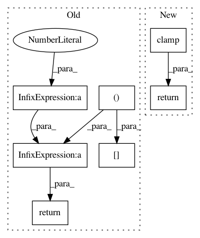

45a03ac258234ba49c0a43d46ae022493190591e,torch_geometric/nn/models/autoencoder.py,ARGA,reconstruction_loss,#ARGA#Any#Any#Any#,208
Before Change
def reconstruction_loss(self, adj, edge_index, neg_adj_mask):
row, col = edge_index
loss = -torch.log(torch.sigmoid(adj[row, col])).mean()
loss = loss - torch.log(1 - torch.sigmoid(adj[neg_adj_mask])).mean()
return loss
def discriminate(self, z):
z_real = torch.randn(z.size())
d_real = self.discriminator(z_real)
After Change
pos_loss = -torch.log(self.decode_indices(z, pos_edge_index)).mean()
neg_loss = -torch.log(
(1 - self.decode(z)[neg_adj_mask]).clamp(min=1e-8)).mean()
return pos_loss + neg_loss
def loss(self, z, pos_edge_index, neg_adj_mask):
return self.reconstruction_loss(z, pos_edge_index, neg_adj_mask)
In pattern: SUPERPATTERN
Frequency: 3
Non-data size: 7
Instances
Project Name: rusty1s/pytorch_geometric
Commit Name: 45a03ac258234ba49c0a43d46ae022493190591e
Time: 2019-03-26
Author: matthias.fey@tu-dortmund.de
File Name: torch_geometric/nn/models/autoencoder.py
Class Name: ARGA
Method Name: reconstruction_loss
Project Name: uber/pyro
Commit Name: 42dc18f2a13441eefdfceed905843a3d19b27072
Time: 2020-12-07
Author: fritz.obermeyer@gmail.com
File Name: pyro/distributions/one_two_matching.py
Class Name: OneTwoMatching
Method Name: log_partition_function
Project Name: uber/pyro
Commit Name: 42dc18f2a13441eefdfceed905843a3d19b27072
Time: 2020-12-07
Author: fritz.obermeyer@gmail.com
File Name: pyro/distributions/one_one_matching.py
Class Name: OneOneMatching
Method Name: log_partition_function